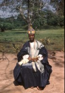

Ordained by Principal George JeffreysIt has been a tremendous day. After the blessed weekend of meetings at Camden Town, we said Goodbye to Miss Peterson [with whom we have been staying at 67 Fellowes Road, NW3], took the tube to Clapham South (Bakerloo Line from Swiss Cottage to Charing Cross, then Northern Line), and arrived at 8 Clarence Avenue promptly at 10.45am. A tallish grey-haired lady — Mrs Pike, Principal’s housekeeper — answered the doorbell. We entered a large hall and were led into a spacious and handsome room over the fireplace of which were hung several photographs, including a large one of George Jeffreys as a young man [jpg] and, somewhat incongruously, a smaller coloured picture of Jesus. Principal would be with us in a few moments, she assured us, and then added that he liked doing the washing up: a visitor had called one day and been greatly surprised when the door had been opened by none other than the great evangelist himself, wearing an apron! I told Principal about my conversion experience and call to the healing ministry, of my appreciation for his ministry, and of so many people telling us wherever we go how they were saved or healed in his meetings. He listened attentively and then asked in his quiet, gentle Welsh accent, “What do you do with your converts?” I had to say (since I have no desire to start a new denomination, but a little ruefully), “They join the church which asks me to preach for them.” I knew what was behind the question, having heard so much about Principal having been forced out of Elim — the movement which, under God, came into existence as a direct result of his inspired ministry — and having read everything I could find on the matter, in particular Noel Brooks’ Fight for the Faith and Freedom.[jpg] I felt a great love for this dear man of God. Everything about him spoke of humility, but I sensed the anguish in his soul, the cross he has had to bear. I have heard people say, “George Jeffreys was forced to leave Elim because of his British Israel beliefs”, or “George Jeffreys became a B.I. and lost his power,” when nothing could be further from the truth. These were lies put about to conceal the real issue, which was Church Government. Under George Jeffreys’ inspired ministry, nearly 300 Elim churches came into existence until, in 1934, he was tricked into signing the Trust Deed [jpg] which made Elim the legal owners of all the properties which the local congregations had bought. Despite all his efforts to redress the situation, Elim refused to budge, and Principal resigned from Elim on Friday 1st December 1939. He founded the Bible-Pattern Church Fellowship the following year. I said to him, “Principal, I understand the circumstances of your leaving Elim, that it was about Church Government, yet people say it was about British Israel. But I understand that you learned about British Israel from John Leech, K.C., in about 1915 — is that correct? “Yes” he said, “and I wish more young men like you would believe it.” But of course I don’t. I have always assumed it was wrong, and have been selling Pastor Hardstaffe’s British Israel — A Snare of Satan in our meetings. Eventually we came round to the purpose of our visit. God has called me to the ministry, and has been confirming the Word with signs following; and we shall soon be going to Nigeria, D.V. We wanted all things to be done decently and in order, and for Jesus to be glorified. Would he now lay his hands on us and pray for us? He motioned for us to kneel. My eyes were closed. Presently we heard his deep sonorous voice imploring the Lord to anoint and bless us, then felt his hands gently laid upon us. I felt the power go through me. I knew what it was like for Elisha kneeling before Elijah, and for each one of the people who was touched by Jesus; I know I am separated for the work we are called to do, that God has put me into the ministry, and I am ordained a preacher and a teacher. I shall treasure this experience all my life I wished we could have stayed a little longer with Principal,[jpg] but we had to get back home as we had arranged for the F.o.R. Youth Committee to meet here tonight We took the tube back to Charing Cross and then Circle line to Paddington in good time to board the 2.10pm express, arriving at Snow Hill at 4.25pm. We were back home soon after 5pm, just in time to open the day’s letters and write receipts for the gifts (£2 18s) which had come in. Miss Dodgson gave us £20 for my ministry over the weekend. Our rail fares amounted to £2 7s (23/-d + reserved seats 6d each) and tube fares 8s 4d, and I donated £1 11s 6d to the World Revival Crusade. |
|
<#601200#> |
Africa!We are in Africa at last, staying at the Central Hotel, Kano, for the next week, DV, but it is a miracle that we ever got here. We were due to leave Rome Ciampino Airport at 8.45pm but our Britannia jet-prop airliner, flight BA255, [jpg] was late arriving from London, so we were delayed. Then we were informed that due to very bad weather conditions and a heavy payload of 73 passengers, we would be flying to Algiers for refuelling. We had a bumpy flight to Algeria but managed to sleep a little, keeping our seatbelts fastened most of the time. We had second-row seats B4 and 5. We landed at five minutes to midnight in torrential rain, and a ’bus took us the few yards from the plane to the airport terminal. I never dreamt we would land on the coast of North Africa at one of the world’s worst trouble spots, where there has been so much rioting and bloodshed. After a further delay of two hours, weather conditions had improved slightly, and we were about ready to leave. However, Freda had gone to the toilet, a subterranean affair down a flight of steps, and the next thing I knew was that she was crying out for help as she had got locked in. There was no one else around so I had to rush down the steps and put my shoulder to the door, breaking the lock. I felt embarrassed at causing such damage, though. Soon we were on board again, our seatbelts fastened. The giant airliner gathered speed and we were roaring down the runway, expecting any moment to take off, when the pilot jammed on the brakes, the plane gave a violent lurch, and we shuddered and slithered to a standstill. We were thrown forward in our seats and felt very shaken, but no one screamed. An anxious stewardess, sitting in the front row across from us, rushed forward to enquire what had happened, and we heard one of the crew say, “Number three engine fell off”! It was a split-second decision. A moment or two later we might have left the ground and crashed to our deaths, or else smashed through the end of the runway with disastrous consequences. But we felt like Paul in Acts 27:25. For twenty minutes or more the pilot checked and re-checked the performance of the engines, then once again we were roaring down the runway, and this time we were airborne. The plane circled round for a few minutes, and then we left the twinkling lights of Algiers far beneath us and headed for Nigeria. We slept through the night hours and then the stewardess awoke us to say that we would be landing at Kano in fifteen minutes. It was now almost light, we had flown over the Sahara desert, and as the Britannia prepared to land, we peered through the window, anxious for our first glimpse of Nigeria. Below us we could see the brown, parched earth and a few scattered trees. We landed at about 7.30am, and a holy joy filled our hearts as we set foot for the first time on Nigerian soil. Soon we were in the Airport ’bus bumping along the rough road into the heart of modern Kano, about 5–6 miles. We noticed a camel-train at the airport, women carrying children on their backs and loads on their heads, men with wide-brimmed sunhats, laden donkeys, gorgeous flowers, exotically coloured lizards which run about everywhere, vultures circling in the intense blue sky above. We try to take it all in, the sights, the sounds, the smells. We are quite overwhelmed and can scarcely believe that we are in Nigeria. We had a walk round after lunch. It is so hot here, and windy and very dusty, the Harmattan blowing from the Sahara. |
|
This morning we went for a walk round the new part of Kano. An Englishman gave us a lift back in his car. He told us that he has been here for ten years. We had another walk after tea and talked to some of the people. |
|
Today was the Moslem holy day. We went for a walk to the white people’s residential area before breakfast, and saw some wonderful homes and gardens. Two Londoners gave us a lift back to the hotel in their car. We spent the morning writing letters. After a rest, we went out again about 4.30pm taking the Clarion tape-recorder with us, and talked to the people. |
The old city of KanoWe walked into the old part of Kano this morning, feeling rather nervous. This city is a thousand years old and the greatest stronghold of Mohammedanism in the African continent. We saw the famous Mosque with its green dome and sparkling minarets, and visited the crowded market with its stalls displaying all manner of trinkets and textiles and the most hideous accoutrements of the witch-doctor. We saw a snake-charmer and, later by the roadside, a poor leper with gnarled hands and a begging bowl. One-tenth of the population suffers from leprosy. I took several photographs to show the people at home what we have seen. [slides 00126–31] Afterwards we were exhausted but a car stopped for us and gave us a lift back to the hotel. |
The Emir’s son is healed!We found the Apostolic Church this morning and I was invited to preach. The Lord wonderfully blessed the Word, I explained why we had come and later Pastor Zaccheus Alaherin and a deacon came to see us here in the hotel — they had arranged an open-air meeting for us at 5pm. So with the Pastor and members of the Church we set out to conduct our first public meeting in Nigeria. In this great stronghold of Mohammedanism it is mostly forbidden even to preach Christ in the open, so we could not display our Crusade banners, but we sang There is power in the Blood and some other choruses, and hundreds of people were soon gathered. I felt this was the greatest challenge of my ministry, facing for the first time in my life a congregation the great majority of whom neither believed in Jesus Christ as the Son of God, nor in the Resurrection. Then with two interpreters — Hausa and (I think) Fulani — I told the people we had come to preach Jesus Christ the Son of God; how two thousand years ago He died on a Cross that we might be saved through His Precious Blood. But He rose from the dead, He was alive today, and all power was given unto Him in Heaven and in earth. And then I said: “Buddha is dead, Mohammed is dead, but Jesus Christ is alive.” Miracles would prove the Resurrection. If they did not see miracles, then Christianity was false. But if they saw one miracle, this would prove that Jesus Christ is truly the Son of God and risen from the dead. It wasn’t until afterwards that I realised how we might easily have caused a riot. Preachers here are absolutely forbidden to mention any other religion, and I had not only mentioned Mohammed but told hundreds of his devoted followers that he was dead. But the Lord was with us. I preached a simple Gospel message, then called a healing line and began praying for the sick, laying hands on each one. Hundreds filed past us, everyone seeming to be healed and still they kept coming. At one point Freda said, “Haven’t we seen this one before?” Then came a young man, very well-dressed, who stood out from the others by his immaculate white robes. He held a hand up to his eye, explaining that it was giving him much pain and he could not see through it. I asked if he believed Jesus could heal him. Yes, he said. Whereupon I gently laid hands on him, covering both his eyes with my palms. Then, calling on Jesus’ Name as I did so, I took a hand away first from his good eye and then from the blind eye, and it was opened instantly. The young man could see perfectly and for the first time in months he was free from pain. It was a wonderful miracle, and there was great rejoicing from Christians and Moslems alike for this marvellous manifestation of God’s love and power. I continued praying for the long line of people who kept coming, so was quite unaware of what was happening. But the young man wanted to know who this was praying for the sick, and it transpired that his father was the Emir of Kano. I could scarcely believe it, for he is acknowledged to be the most powerful Mohammedan ruler in Nigeria, perhaps even the world. He wanted there and then to call a press conference and for me to meet his father, but I declined, not wanting there to be trouble after we have left. Even now I can hardly believe it has happened. Billy Graham was not able to have a Crusade here, nor T.L. Osborn. We were miles away from the Emir’s palace, so how did he come to be there, especially as nothing was advertised? Like nothing else, this one staggering miracle has convinced the people, and scores of Moslems have claimed to accept the Lord Jesus Christ as their Saviour. It has been a day we shall never forget. |
|
We had a letter from Mam this morning. A man followed us all round the town. It was very disconcerting. Pastor Alaherin came this afternoon, and we had another open-air meeting at 6pm. |
|
Clarice’s 21st birthday. Our last day in Kano. We went for a walk this morning and took some photographs. We had another open-air meeting this evening. We have no publicity, no platform, no advance preparations, but here in Kano the Lord has given us some of the greatest meetings of our ministry, and revival has come to the church. “There was great joy in that city.” We leave tomorrow for Lagos. Freda packed the cases last night, then had a bath. I paid the bill, which came to £40, far more than we expected. We booked all our accommodation at Thos Cook’s in New Street, but the cost of the hotels in Frankfurt, Rome and now in Kano, has been far more than they told us: I think their prices were out of date. |
Dumped in the roadWe are now in Lagos, capital of Nigeria, where we arrived this morning from Kano. We had dinner about 10.30pm last night and then slept in the hotel lounge until 3am when the airport bus called to pick us up. Our flight was BA255, the same as we travelled on from Rome last week, and with some of the same crew, but not the same seats — F5 and 6 today. We left Kano at 4.35am and had breakfast on the plane. We were due to land at Lagos at 6.35am, but once again our flight was diverted, and we landed instead at Accra, capital of Ghana. We flew over dense equatorial jungle, and the moment we stepped off the plane we felt the steamy heat and our clothes stuck to us — our first experience of the intense humidity that for so long made the coastal swamps of West Africa the “White Man’s Grave”. After collecting our luggage and passing through customs we waited outside for the airport ’bus, but there wasn’t one. There was no alternative but to take a taxi to the hotel, but with hardly any money I felt dubious. We had not gone far when I asked the taxi-driver how much it would cost. “Fifty pounds,” he said, at which I asked him to stop and let us get out, and we found ourselves and our luggage dumped unceremoniously in the road. But the Lord was with us. A smart car came by and stopped for us. It was the Britannia crew from the flight we came on; they recognised us, and brought us straight here to the Ikoyi Hotel, Club Road. We arrived at about 1pm. This is a lovely hotel, away from the noise and bustle of Lagos, in a residential area with lovely houses and lush gardens and vegetation, but we have not enough money to pay the bill. But we are here on the Lord’s work, and we trust Him to provide — Philippians 4:19. |
|
This morning as arranged, Pastor J.M. Ojo and a friend came to the hotel to meet us and to discuss plans for our proposed visit to Ibadan. They stayed until 4pm. After dinner this evening Freda did some knitting. |
|
Rev. J.K. Stephens came to see us this morning. We went for a walk this afternoon and then wrote letters. |
|
This morning Mr. Johnson drove us into the centre of Lagos, and we went to see Pastor Obembe, where we had a lovely time of fellowship. Afterwards we were walking back to the Ikoyi when a man stopped to give us a lift. The King of Otta came to visit us this evening. We are going to bed early tonight. |
|
Service at Christ Apostolic Church in the centre of Lagos this morning. Pastor Obembe came to see us this evening. We had only one shilling left but the Lord has sent us two guineas! |
|
We had Christmas cards from Mam & Dad and Clarice & Noel this morning. Freda wrote to Eunice and to George Hartley. A local pastor and members of his church came to see us this afternoon. We have each had a bath and are going to bed early. |
Campos SquareWe began the Lagos Crusade with an open-air meeting at Campos Square this evening. Hundreds of people came. We received a letter from Richard Lovett this morning. He is a great friend and supporter, and it was a joy to hear from him. |
|
We had a great open-air meeting this evening at Campos Square. Many raised their hands to make a decision for Christ, and many were healed when I prayed for them, including a girl who was deaf and dumb. While I was preaching someone threw a lighted firework into the crowd. Fortunately there was no explosion and no panic, otherwise many people might have been trampled upon and injured. I told the people that we would not be responsible for anyone who tried to break up the meeting. Thereafter, we had perfect order and no further trouble. We went for a walk this morning. Freda wrote to Reg & Dorothy Robbins. Some pastors came to see us. |
Abrupt endThe Crusade here at Lagos has come to an abrupt end after only two services. All public meetings have been banned until January 4th as a precaution against hooliganism and to prevent political demonstrations during the Christmas and New Year festivities. It is very disappointing, but it seems we were in some considerable danger the last two nights, as Campos Square is a notorious trouble spot. During our week in Lagos, a man who got into an argument with a woman was chased by a raging mob of people and kicked to death in the main street. We had a letter from His Highness the Olabadan of Ibadan this morning: the King has invited us to visit him. There was a letter too from Evangelist Gabriel. Freda wrote to the Olabadan, also to her mother and Reg. & Freda Samways. The pastors and elders came to see us this evening. |
|
We had a letter from Freda’s mother this morning, and one from Reg & Dorothy Robbins. The pastors and elders came to see us again this evening. Christmas decorations have been put up in the hotel. Mr. Osho bought us some fruit. We both had a bath this evening and washed our hair. |
|
We had letters from Freda’s mother, Brother Stephens and a card from Julia today. Pastor Obembe came to see us this morning. Freda wrote to her mother, and has done some knitting. This evening she has been reading Women of our Company by Pauline M. Webb, which Anne Jesson gave her for Christmas. It is about the work of women missionaries overseas. I have been reading In His Presence by E.W. Kenyon and Safari for Souls: With Billy Graham in Africa — he was here in January. I am also reading The Amplified New Testament, which the folk gave us before we left. Reg Samways has written in it — “To Freda & Brian, God’s blessing be upon you both as you go forth upon the Nigerian Crusade. Hebrews 13:5–6. From Acocks Green Prayer Group.” |
|
It is Christmas Day and we feel very strange being alone this evening and wondering what the family are doing. We went to the service at the Methodist Church, Ikoyi, this morning and had a lift back. I took a photo of Freda and some of the congregation outside the church [slide 00207]. Pastor Obembe called later. We had a lovely Christmas dinner. Later we went for a walk. We have spent the evening quietly, with no visitors. |
|
Brother Stephens came with the King of Otta this morning. We discussed the arrangements for the Crusade there, which starts tomorrow, and were his guests for lunch. Later we went for a walk. Freda wrote to John & Coral Vinden and to Pastor Ojo. |
|
We left Lagos this morning and are now at Otta staying at the Government Rest House. About 4,000 attended the meeting tonight but people were slow to come forward to testify; about ten did however. Afterwards we went back to the Palace for a drink and enjoyed a Fanta. This is the first Evangelistic Crusade ever to be held in Otta, and people were arriving from early morning, by trucks and barrows, some by bicycles or other conveyance, but mostly on foot. Some folk brought stools to sit on while they waited hours for the meeting to begin. By nightfall several thousand people had gathered outside the Royal Palace where we are holding the Crusade. The King of Otta [His Highness Oba T.T. Dada, M.B.E., J.P., F.R.G.S., M.H.C., the Olotta of Otta, Chairman of the Crusade] sat on the platform with us. Freda asked the people to be quiet and reverent and told how the Lord had blessed and healed hundreds in our meetings at Kano and Lagos, and to expect to see the same tonight. I preached on Romans 1:16 — “For I am not ashamed of the Gospel of Christ: for it is the power of God unto salvation to every one that believeth,” explaining that the Gospel has the answer to our mental, physical and spiritual needs. I imagine that ninety percent of the congregation were Moslems. When I gave the altar-call the response was electrifying, about 2,000 people professing to accept Christ in this first service. A great sea of waving hands and beaming faces showed how the Spirit of God had moved upon the people. I encouraged the people to thank the Lord out loud, and a deafening roar went up from the multitude as they praised and thanked Him for what he had done for them. People came running down the street to see what it was all about. Then we prayed the Mass Prayer and scores were healed simultaneously. Afterwards we went back to the Palace for a drink and enjoyed a Fanta. The King said it would have been better if I had prayed for the people individually, which I may do tomorrow. |
|
Brother Stephens came early this morning The mouse which disturbed us the night before last had produced a family this morning. A member of the SDA Church came to see us this afternoon. The meeting was much smaller this evening, but the Lord blessed us in a wonderful way. |
|
A photographer came this morning to take photographs of us with the King. Freda presented a Bible to His Highness. I took some photographs too, and one of Freda outside the Guest House. [slides 00208–12]. We had a microphone for the meeting this evening. |
|
We had our final meeting at Otta tonight. Afterwards I was asked to pray for the Olotta and his Chiefs and family. We visited the market this morning and took photographs. Later we had a visit from some children who brought us fruit.
|
|
We are now at Abeokuta, staying at the Government Catering Rest House, where we arrived earlier today. We had a prayer meeting at the Apostolic Church at 5.30am. Later we drove here with His Highness and Brother Stephens and had lunch here. Freda wrote letters to her mother and Mam & Dad. |